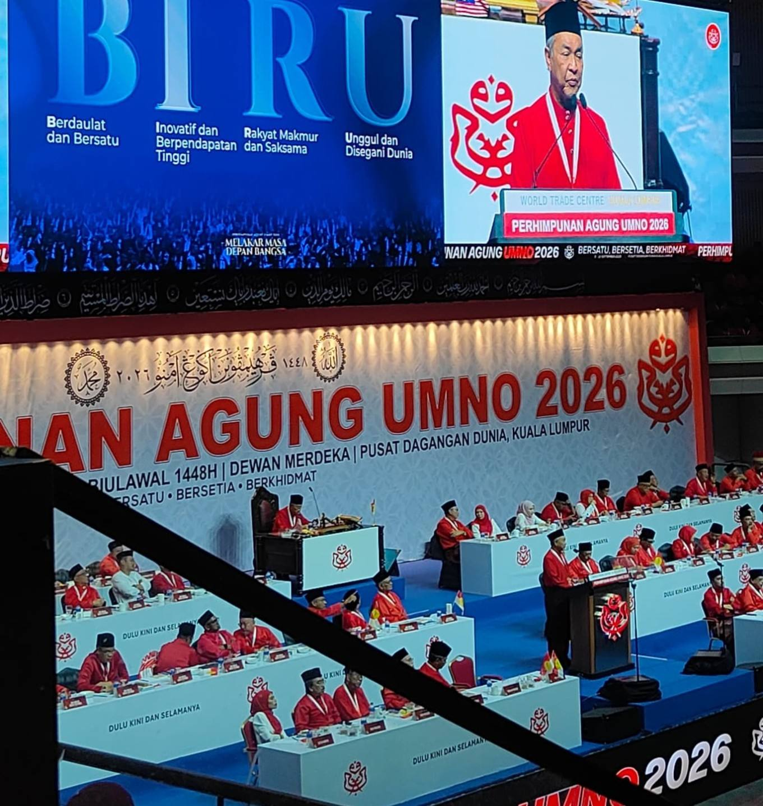
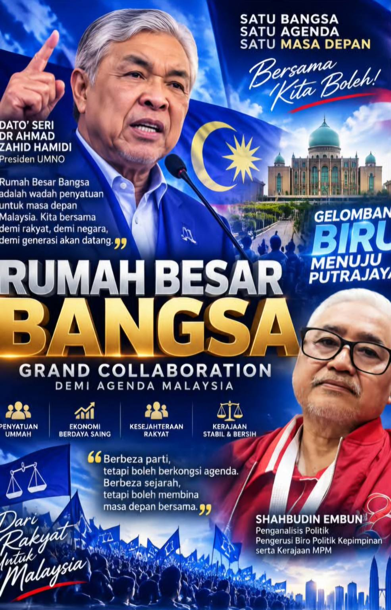

RUMAH BESAR BANGSA: GELOMBANG BIRU MENUJU PUTRAJAYA

Apabila rumah diperbesarkan, pintunya dibuka; apabila bangsa disatukan, jalannya menuju Putrajaya menjadi lebih terbentang.
Ucapan Presiden UMNO, Datuk Seri Dr Ahmad Zahid Hamidi, yang menggambarkan UMNO sebagai “Rumah Bangsa” membawa makna politik yang jauh lebih besar daripada sekadar slogan.
Ia adalah satu isyarat.
Ia adalah satu gagasan.
Dan yang lebih penting, ia adalah satu panggilan untuk kembali membina sebuah rumah politik yang cukup besar untuk menaungi kekuatan bangsa, tanpa mengorbankan prinsip, Perlembagaan dan kepentingan seluruh rakyat Malaysia.
Rumah Bangsa bukan rumah untuk satu kelompok sahaja.
Ia bukan rumah untuk mereka yang hanya mempunyai satu warna politik.
Sebaliknya, ia boleh menjadi rumah besar kepada semua kekuatan politik yang sanggup berkongsi agenda, menghormati perbezaan dan meletakkan kepentingan negara mengatasi kepentingan parti.
Di sinilah saya melihat lahirnya apa yang boleh kita namakan sebagai Gelombang Biru.
Biru bukan sekadar warna.
Biru adalah simbol kestabilan.
Biru adalah simbol kesederhanaan.
Biru adalah simbol kematangan politik.
Dan biru boleh menjadi simbol kesepakatan baharu untuk Malaysia.
Jika gagasan Rumah Bangsa ini benar-benar berjaya diterjemahkan di akar umbi, maka PRU-16 boleh menjadi medan untuk membuktikan bahawa politik Melayu dan politik nasional tidak semestinya terus terperangkap dalam perseteruan lama.
Sudah tiba masanya kita beralih daripada politik “siapa menang, siapa kalah” kepada politik “siapa sanggup bekerjasama untuk menyelamatkan dan membangunkan negara.”
GRAND COLLABORATION — BUKAN SEKADAR PAKATAN PILIHAN RAYA
Saya melihat masa depan politik Malaysia mungkin memerlukan satu bentuk Grand Collaboration — satu kerjasama besar antara parti-parti yang mempunyai titik temu dalam agenda nasional.
Dalam konteks itu, UMNO/BN dan PAS boleh menjadi antara kekuatan penting untuk meneroka titik persamaan, sekiranya terdapat kesediaan politik, keikhlasan dan kesepakatan mengenai agenda bersama.
Begitu juga dengan parti-parti lain yang menerima prinsip-prinsip asas Agenda Biru — kestabilan politik, ekonomi yang kukuh, pembelaan rakyat, pengukuhan institusi negara, keharmonian kaum, Islam sebagai agama Persekutuan, kedudukan Raja-Raja Melayu serta penghormatan terhadap Perlembagaan.
Tidak semestinya semua mesti menjadi satu parti.
Yang lebih penting ialah semua boleh duduk di bawah satu bumbung persefahaman nasional.
Inilah politik masa depan.
Berbeza parti, tetapi boleh berkongsi agenda.
Berbeza lambang, tetapi boleh berkongsi matlamat.
Berbeza sejarah, tetapi boleh membina masa depan bersama.
Dan jika rakyat memberikan mandat, maka kerjasama seperti ini boleh menjadi asas kepada sebuah kerajaan pasca-PRU16 yang lebih stabil, inklusif dan berorientasikan agenda nasional.
DARI RUMAH BANGSA KE PUTRAJAYA
Saya percaya, jika Rumah Bangsa benar-benar mahu menjadi rumah besar, pintunya mesti cukup luas.
Namun rumah yang luas tidak bermaksud tiangnya boleh dirobohkan.
Tiangnya tetap mesti berdiri atas Perlembagaan Persekutuan, Raja Berperlembagaan, demokrasi berparlimen, Islam sebagai agama Persekutuan, hak semua rakyat serta prinsip keadilan dan kesejahteraan.
Di sinilah terletaknya kekuatan sebenar Gelombang Biru.
Ia bukan gelombang untuk menenggelamkan sesiapa.
Ia bukan gelombang kebencian.
Ia bukan gelombang perkauman sempit.
Ia adalah gelombang penyatuan.
Gelombang yang mahu mengumpulkan kekuatan.
Gelombang yang mahu mengembalikan keyakinan rakyat.
Gelombang yang mahu menawarkan sebuah kerajaan yang kukuh, berwibawa dan mampu bekerja.
Dan akhirnya, jika rakyat memberikan mandat, gelombang itu boleh bergerak menuju Putrajaya.
Tetapi Putrajaya bukan matlamat terakhir.
Putrajaya hanyalah tempat amanah itu bermula.
Yang lebih penting ialah apa yang akan dilakukan selepas sampai ke sana.
KITA TIDAK MAHU SEKADAR MENANG — KITA MAHU MEMERINTAH DENGAN AGENDA
Inilah perbezaan antara politik lama dengan politik yang mahu kita bina.
Kita tidak mahu sekadar menang pilihan raya.
Kita mahu menang dengan agenda.
Kita tidak mahu sekadar membentuk kerajaan.
Kita mahu membentuk kerajaan yang mampu menyatukan rakyat.
Kita tidak mahu sekadar mengira jumlah kerusi.
Kita mahu mengira jumlah masalah rakyat yang berjaya diselesaikan.
Kos sara hidup.
Peluang pekerjaan.
Pendidikan.
Ekonomi.
Perumahan.
Keselamatan.
Kebajikan.
Masa depan generasi muda.
Dan maruah Malaysia di mata dunia.
Inilah seharusnya menjadi kandungan kepada Agenda Biru.
RUMAH BESAR, PINTU TERBUKA, HATI TERBUKA
Ucapan Dato’ Seri Ahmad Zahid mengenai Rumah Bangsa harus dibaca dengan pemikiran yang lebih besar.
Rumah yang besar tidak boleh dibina dengan ego.
Ia dibina dengan kepercayaan.
Ia tidak boleh berdiri hanya dengan satu tiang.
Ia memerlukan banyak tiang yang kukuh.
UMNO.
BN.
PAS.
Dan mana-mana kekuatan politik yang sanggup menerima agenda nasional yang disepakati bersama.
Namun semuanya mesti dilakukan dengan keikhlasan, rundingan dan penghormatan terhadap identiti masing-masing.
Tidak perlu memaksa.
Tidak perlu menghina.
Tidak perlu menutup pintu.
Yang diperlukan ialah keberanian untuk duduk semeja.
Kerana sejarah telah mengajar kita satu perkara:
Perpecahan mungkin memenangkan parti, tetapi penyatuan boleh memenangkan bangsa dan negara.
GELOMBANG BIRU — GELOMBANG MASA DEPAN
Maka, saya melihat ungkapan “Rumah Bangsa” bukan sekadar retorik PAU.
Ia boleh menjadi permulaan kepada sebuah pemikiran politik baharu.
Sebuah rumah besar.
Sebuah meja rundingan besar.
Sebuah Grand Collaboration.
Dan akhirnya, sebuah gabungan kekuatan yang mampu membawa Malaysia memasuki era baharu selepas PRU-16.
Jika itu berlaku, maka Gelombang Biru bukan lagi sekadar slogan.
Ia menjadi mandat rakyat.
Dan apabila mandat rakyat itu diterjemahkan melalui sebuah kerajaan yang stabil, kuat dan mempunyai agenda bersama, maka perjalanan menuju Putrajaya bukan lagi sekadar impian politik.
Ia menjadi satu kemungkinan yang nyata.
Kerana akhirnya politik bukan tentang siapa yang paling kuat menjerit.
Politik adalah tentang siapa yang paling mampu menyatukan.
Dan pada akhirnya—
RUMAH YANG BESAR TIDAK PERNAH TAKUT MEMBUKA PINTUNYA.
RUMAH YANG KUAT TIDAK TAKUT MENERIMA TIANG-TIANG BAHARU.
DAN BANGSA YANG BERSATU TIDAK AKAN TAKUT MENGHADAPI MASA DEPAN.
RUMAH BESAR BANGSA.
AGENDA BIRU.
GRAND COLLABORATION.
GELOMBANG BIRU MENUJU PUTRAJAYA.
Insya-Allah, jika rakyat mengizinkan.
— Shahbudin Embun
Penganalisis Politik
Pengerusi Biro Politik Kepimpinan serta Kerajaan MPM

← Kembali ke halaman utama